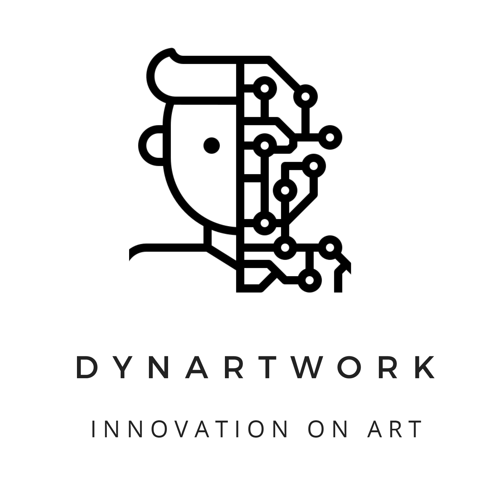

<div class="bg">
    <mat-card class="example-card">
        <mat-card-header>
          <mat-card-title>dynARTwork</mat-card-title>
          <mat-card-subtitle>MAKE YOUR ART LIVE</mat-card-subtitle>
        </mat-card-header>
        
        <mat-card-content>
          <p>
            We want to distinguish ourselves from the two classic proposals: conservation of 
            works of art, improvement of the visitor's user experience. We would like to create 
            our work of art, or rather our generator of works of art. We think this is a way to 
            attract visitors to the museum on a daily basis, as the artwork is dynamic and changes 
            according to how the world changes.
          </p>
        </mat-card-content>
      </mat-card>
      
</div>